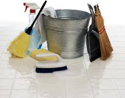
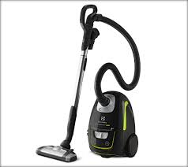
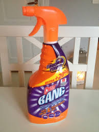
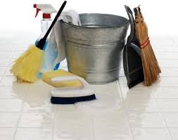
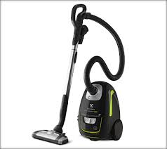
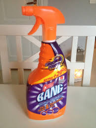

Joel clean är städfirman i Solna som snabbt blivit en kraft att lita på när det gäller all typ av städhjälp i och omkring Solna. En stor del av framgångsreceptet är att vi är väldigt lyhörda och ständigt sätter kunden i fokus. Som ett meriterat familjeföretag vet vi hur viktigt det är att ha bra relationer med sina kunder och behandla alla uppdrag med största respekt. Anlitar du oss kan du vara säker på att du får ett städbolag du kan lita på. Vi erbjuder alla typ av städning. Har du flyttat och behöver hjälp med flyttstädningen? Vi ser till så du kan lämna över din lägenhet skinande ren. Har du mycket att stå i och behöver avlastning med städningen i hemmet? Vi erbjuder hemstädning så får du mer tid för annat. Kanske behöver du hjälp varje vecka eller räcker det med en rejäl storstädning? Oavsett så har vi kunnig städpersonal som hjälper dig att uppnå skinande resultat. Vi erbjuder också fönsterputsning antingen till dig privat eller till ditt företag. Vill du att vi städar på ditt kontor? Ta en närmare titt på tjänsten kontorsstädning. Oavsett vilken typ av städning du behöver så står vi redo att hjälpa dig. Ingen av tjänsterna som passa in på ditt behov? Kontakta oss med din utmaning så kan vi säkert hitta en lösning just för dig. Vi är städfirman i Solna som gör din vardag lättare och du kan använda din dyrbara tid för viktigare saker.
 




